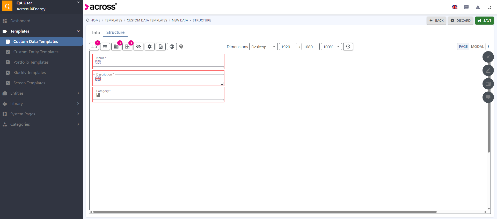
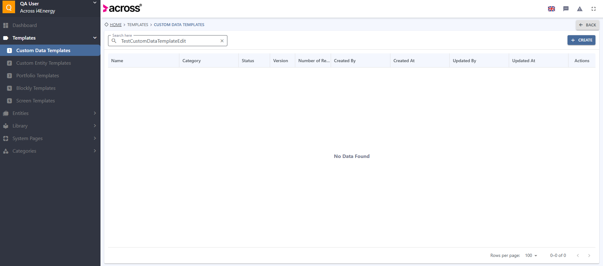
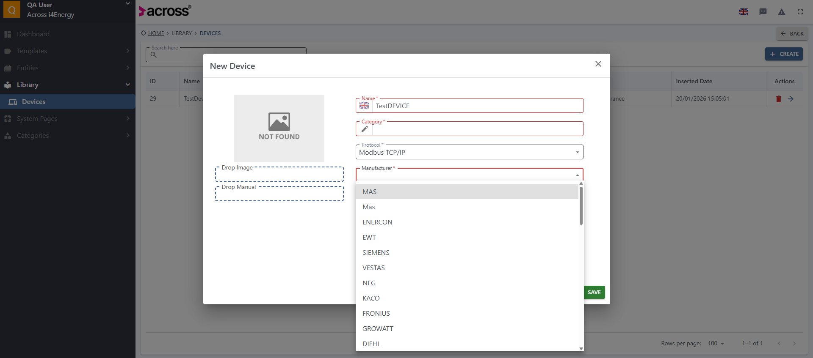
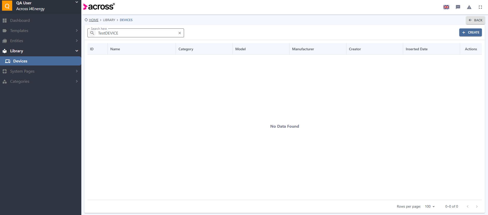

-
Login
3:17:12 PM / 00:00:09:483 Pass
Login
01.20.2026 3:17:12 PM 01.20.2026 3:17:22 PM 00:00:09:483 · #test-id=1PassTC-01 Login With Valid CredentialsGiven Navigate to Testing EnvironmentWhen Login with QA user credentialsThen Login should be successfully -
Logout
3:17:22 PM / 00:00:10:629 Pass
Logout
01.20.2026 3:17:22 PM 01.20.2026 3:17:33 PM 00:00:10:629 · #test-id=8PassTC-02 Logout From ApplicationGiven Navigate to Testing EnvironmentWhen Login with QA user credentialsThen Login should be successfullyAnd Go to MyAccountAnd Click Logout ButtonThen User Should Logout Successfully -
Customer Menu Creation
3:17:33 PM / 00:00:16:210 Pass
Customer Menu Creation
01.20.2026 3:17:33 PM 01.20.2026 3:17:49 PM 00:00:16:210 · #test-id=18PassTC-03 Customer Menu Creation ScenarioGiven Navigate to Testing EnvironmentWhen Login with QA user credentialsThen Login should be successfullyAnd User clicks following ItemsdownArrow adminView And User clicks following dynamic elementsclick Customer Menu click Edit click Create And User enters data to necessary areasname TestMenu And User changes languages of relevant fieldsenglish greek And User enters data to necessary areasname TestMenuEL And User selects necessary areasmenuIcon iconABC And User press the Esc Button on Keyboard Times1 And User selects necessary areasmenuFeature menuSystemPages pageDesigner And User press the Esc Button on Keyboard Times1 And User clicks following dynamic elementsclick Confirm click Save click Yes Then User should see verify messagesuccess success -
Customer Menu Editing
3:17:49 PM / 00:00:13:851 Pass
Customer Menu Editing
01.20.2026 3:17:49 PM 01.20.2026 3:18:03 PM 00:00:13:851 · #test-id=36PassTC-04 Customer Menu Editing ScenarioGiven Navigate to Testing EnvironmentWhen Login with QA user credentialsThen Login should be successfullyAnd User clicks following ItemsdownArrow adminView And User clicks following dynamic elementsclick Customer Menu click Edit click TestMenu And User enters data to necessary areasname TestMenuEdit And User changes languages of relevant fieldsenglish greek And User enters data to necessary areasname TestMenuEditEL And User clicks following dynamic elementsclick Confirm click Save click Yes Then User should see verify messagesuccess success -
Customer Menu Deletion
3:18:03 PM / 00:00:11:879 Pass
Customer Menu Deletion
01.20.2026 3:18:03 PM 01.20.2026 3:18:15 PM 00:00:11:879 · #test-id=50PassTC-05 Customer Menu Deletion ScenarioGiven Navigate to Testing EnvironmentWhen Login with QA user credentialsThen Login should be successfullyAnd User clicks following ItemsdownArrow adminView And User clicks following dynamic elementsclick Customer Menu click Edit delete TestMenuEdit click Yes click Save click Yes Then User should see verify messagesuccess success -
Custom Data Template Creation
3:18:15 PM / 00:00:29:492 Fail
Custom Data Template Creation
01.20.2026 3:18:15 PM 01.20.2026 3:18:44 PM 00:00:29:492 · #test-id=60FailTC-14 Custom Data Template Creation ScenarioGiven Navigate to Testing EnvironmentWhen Login with QA user credentialsThen Login should be successfullyAnd User clicks following dynamic elementsclick Templates click Custom Data Templates click Create click Info And User enters data to necessary areasname TestCustomDataTemplate description CustomDataTemplateForTest And User selects necessary areasdeviceCategory And User clicks following dynamic elementsclick Data Template Cat_1 And User press the Esc Button on Keyboard Times1 And User changes languages of relevant fieldsenglish greek And User enters data to necessary areasname TestCustomDataTemplateEL description CustomDataTemplateForTestEL And User clicks following dynamic elementsclick Structure And User clicks following dynamic elementsclick Save And User enters data to necessary areasreason TestCustomDataTemplateCreation And User clicks following dynamic elementsclick Yes Then User should see verify messagesuccess success And User clicks following dynamic elementsclick Dashboard Step skippedSteps._Hooks.after(io.cucumber.java.Scenario)screenshot name -
Custom Data Template Editing
3:18:44 PM / 00:00:25:059 Fail
Custom Data Template Editing
01.20.2026 3:18:44 PM 01.20.2026 3:19:09 PM 00:00:25:059 · #test-id=80FailTC-15 Custom Data Template Editing ScenarioGiven Navigate to Testing EnvironmentWhen Login with QA user credentialsThen Login should be successfullyAnd User clicks following dynamic elementsclick Templates click Custom Data Templates And User search the itemsearch TestCustomDataTemplate And User clicks following dynamic elementsclick search click TestCustomDataTemplate And User clicks hide button if the alert existhide Step skippedAnd User clicks following Itemsedit Step skippedAnd User enters data to necessary areasdescription CustomDataTemplateForTest Step skippedAnd User confirms the selectionsave yes Step skippedThen User should see verify messagesuccess success Step skippedAnd User clicks following dynamic elementsclick Dashboard Step skippedSteps._Hooks.after(io.cucumber.java.Scenario)screenshot name -
Custom Data Template Deletion
3:19:09 PM / 00:00:24:971 Fail
Custom Data Template Deletion
01.20.2026 3:19:09 PM 01.20.2026 3:19:34 PM 00:00:24:971 · #test-id=96FailTC-16 Custom Data Template Deletion ScenarioGiven Navigate to Testing EnvironmentWhen Login with QA user credentialsThen Login should be successfullyAnd User clicks following dynamic elementsclick Templates click Custom Data Templates And User search the itemsearch TestCustomDataTemplateEdit And User clicks following dynamic elementsclick search click TestCustomDataTemplateEdit click Edit click Delete click Yes Then User should see verify messagesuccess success Step skippedAnd User clicks following dynamic elementsclick Dashboard Step skippedSteps._Hooks.after(io.cucumber.java.Scenario)screenshot name -
Device Creation
3:19:34 PM / 00:00:13:068 Fail
Device Creation
01.20.2026 3:19:34 PM 01.20.2026 3:19:47 PM 00:00:13:068 · #test-id=108FailTC- Device Creation ScenarioGiven Navigate to Testing EnvironmentWhen Login with QA user credentialsThen Login should be successfullyAnd User clicks following dynamic elementsclick Library click Devices click Create And User enters data to necessary areasname TestDEVICE model TestMODEL description DeviceForTest And User selects necessary areasprotocol modbus manufacturer mas deviceCategory engine heatEngine And User press the Esc Button on Keyboard Times1 Step skippedAnd User changes languages of relevant fieldsenglish greek Step skippedAnd User enters data to necessary areasname TestDEVICE Step skippedAnd User selects necessary areasshareable shareable Step skippedAnd User confirms the selectionsave yes Step skippedThen User should see verify messagesuccess success Step skippedAnd User clicks following dynamic elementsclick Dashboard Step skippedSteps._Hooks.after(io.cucumber.java.Scenario)screenshot name -
Device Deletion
3:19:47 PM / 00:00:11:315 Pass
Device Deletion
01.20.2026 3:19:47 PM 01.20.2026 3:19:59 PM 00:00:11:315 · #test-id=125PassTC- Device Deletion ScenarioGiven Navigate to Testing EnvironmentWhen Login with QA user credentialsThen Login should be successfullyAnd User clicks following dynamic elementsclick Library click Devices And User search the itemsearch TestDeviceEdit And User clicks following dynamic elementsclick search click delete click Yes And User should see verify messagesuccess success And User clicks following dynamic elementsclick Devices Then User should not find itemnameContains TestDeviceEdit And User clicks following dynamic elementsclick Dashboard -
Device Editing
3:19:59 PM / 00:00:25:052 Fail
Device Editing
01.20.2026 3:19:59 PM 01.20.2026 3:20:24 PM 00:00:25:052 · #test-id=139FailTC- Device Editing ScenarioGiven Navigate to Testing EnvironmentWhen Login with QA user credentialsThen Login should be successfullyAnd User clicks following dynamic elementsclick Library click Devices And User search the itemsearch TestDEVICE And User clicks following dynamic elementsclick search And User clicks following dynamic elementsclick TestDEVICE And User clicks hide button if the alert existhide Step skippedAnd User clicks following Itemsedit Step skippedAnd User enters data to necessary areasname TestDeviceEdit Step skippedAnd User confirms the selectionsave yes Step skippedAnd User clicks following Itemsdevices Step skippedAnd User search the itemsearch TestDeviceEdit Step skippedThen User should to find the item in fieldnameContains TestDeviceEdit Step skippedAnd User clicks following dynamic elementsclick Dashboard Step skippedSteps._Hooks.after(io.cucumber.java.Scenario)screenshot name -
Register Creation
3:20:24 PM / 00:00:25:077 Fail
Register Creation
01.20.2026 3:20:24 PM 01.20.2026 3:20:49 PM 00:00:25:077 · #test-id=158FailTC- Register Creation ScenarioGiven Navigate to Testing EnvironmentWhen Login with QA user credentialsThen Login should be successfullyAnd User clicks following Itemslibrary devices And User search the itemsearch TestDEVICE And User clicks following ItemssearchButton Then User should to find the item in fieldnameContains TestDEVICE And User clicks following ItemsnameContains registers plusIcon Step skippedAnd User enters data to necessary areasregisterName TestRegister displayName TestRegister description RegisterForDevice registerAddress AddressForRegister scanRate 7000 Step skippedAnd User changes languages of relevant fieldsenglish greek Step skippedAnd User enters data to necessary areasdisplayName TestRegister EL Step skippedAnd User changes languages of relevant fieldsenglish greek Step skippedAnd User enters data to necessary areasdescription RegisterForDevice EL Step skippedAnd User confirms the selectionsave yes Step skippedThen User should see verify messagesuccess success Step skippedAnd User search the itemsearch TestRegister Step skippedThen User should to find the item in fieldnameContains TestRegister Step skippedAnd User clicks following dynamic elementsclick Dashboard Step skippedSteps._Hooks.after(io.cucumber.java.Scenario)screenshot name
-
Register Deletion
3:20:49 PM / 00:00:25:192 Fail
Register Deletion
01.20.2026 3:20:49 PM 01.20.2026 3:21:14 PM 00:00:25:192 · #test-id=180FailTC- Register Deletion ScenarioGiven Navigate to Testing EnvironmentWhen Login with QA user credentialsThen Login should be successfullyAnd User clicks following Itemslibrary devices And User search the itemsearch TestDEVICE And User clicks following ItemssearchButton Then User should to find the item in fieldnameContains TestDEVICE And User clicks following ItemsnameContains registers Step skippedAnd User search the itemsearch TestRegisterEdit Step skippedAnd User clicks following ItemssearchButton Step skippedThen User should to find the item in fieldnameContains TestRegisterEdit Step skippedAnd User clicks following Itemsdelete yes Step skippedThen User should see verify messagesuccess success Step skippedAnd User clicks following Itemsregisters Step skippedAnd User search the itemsearch TestRegisterEdit Step skippedThen User should not find itemnameContains TestRegisterEdit Step skippedAnd User clicks following dynamic elementsclick Dashboard Step skippedSteps._Hooks.after(io.cucumber.java.Scenario)screenshot name
-
Register Editing
3:21:14 PM / 00:00:25:277 Fail
Register Editing
01.20.2026 3:21:14 PM 01.20.2026 3:21:39 PM 00:00:25:277 · #test-id=201FailTC- Register Editing ScenarioGiven Navigate to Testing EnvironmentWhen Login with QA user credentialsThen Login should be successfullyAnd User clicks following Itemslibrary devices And User search the itemsearch TestDEVICE And User clicks following ItemssearchButton Then User should to find the item in fieldnameContains TestDEVICE And User clicks following ItemsnameContains registers Step skippedAnd User search the itemsearch TestRegister Step skippedAnd User clicks following ItemssearchButton Step skippedThen User should to find the item in fieldnameContains TestRegister Step skippedAnd User clicks following Itemsedit Step skippedAnd User enters data to necessary areasregisterName TestRegisterEdit displayName TestRegisterEdit description RegisterForDeviceEdit registerAddress AddressForRegisterEdit scanRate 7007 Step skippedAnd User changes languages of relevant fieldsenglish greek Step skippedAnd User enters data to necessary areasdisplayName TestRegisterEdit EL Step skippedAnd User changes languages of relevant fieldsenglish greek Step skippedAnd User enters data to necessary areasdescription RegisterForDeviceEdit EL Step skippedAnd User confirms the selectionsave yes Step skippedThen User should see verify messagesuccess success Step skippedAnd User search the itemsearch TestRegisterEdit Step skippedThen User should to find the item in fieldnameContains TestRegisterEdit Step skippedAnd User clicks following dynamic elementsclick Dashboard Step skippedSteps._Hooks.after(io.cucumber.java.Scenario)screenshot name
-
org.openqa.selenium.TimeoutException
7 tests
org.openqa.selenium.TimeoutException
7 failedStatus Timestamp TestName Fail 15:18:26 PM Then User should see verify message Custom Data Template Creation.TC-14 Custom Data Template Creation Scenario.Then User should see verify messageFail 15:18:51 PM And User clicks following dynamic elements Custom Data Template Editing.TC-15 Custom Data Template Editing Scenario.And User clicks following dynamic elementsFail 15:19:16 PM And User clicks following dynamic elements Custom Data Template Deletion.TC-16 Custom Data Template Deletion Scenario.And User clicks following dynamic elementsFail 15:20:05 PM And User clicks following dynamic elements Device Editing.TC- Device Editing Scenario.And User clicks following dynamic elementsFail 15:20:31 PM Then User should to find the item in field Register Creation.TC- Register Creation Scenario.Then User should to find the item in fieldFail 15:20:56 PM Then User should to find the item in field Register Deletion.TC- Register Deletion Scenario.Then User should to find the item in fieldFail 15:21:21 PM Then User should to find the item in field Register Editing.TC- Register Editing Scenario.Then User should to find the item in field -
org.openqa.selenium.ElementClickInterceptedException
1 tests
org.openqa.selenium.ElementClickInterceptedException
1 failedStatus Timestamp TestName Fail 15:19:42 PM And User selects necessary areas Device Creation.TC- Device Creation Scenario.And User selects necessary areas
-
@SmokeTest
14 tests
@SmokeTest
6 passed 8 failedStatus Timestamp TestName Pass 15:17:12 PM TC-01 Login With Valid Credentials Login.TC-01 Login With Valid CredentialsPass 15:17:22 PM TC-02 Logout From Application Logout.TC-02 Logout From ApplicationPass 15:17:33 PM TC-03 Customer Menu Creation Scenario Customer Menu Creation.TC-03 Customer Menu Creation ScenarioPass 15:17:49 PM TC-04 Customer Menu Editing Scenario Customer Menu Editing.TC-04 Customer Menu Editing ScenarioPass 15:18:03 PM TC-05 Customer Menu Deletion Scenario Customer Menu Deletion.TC-05 Customer Menu Deletion ScenarioFail 15:18:15 PM TC-14 Custom Data Template Creation Scenario Custom Data Template Creation.TC-14 Custom Data Template Creation ScenarioFail 15:18:44 PM TC-15 Custom Data Template Editing Scenario Custom Data Template Editing.TC-15 Custom Data Template Editing ScenarioFail 15:19:09 PM TC-16 Custom Data Template Deletion Scenario Custom Data Template Deletion.TC-16 Custom Data Template Deletion ScenarioFail 15:19:34 PM TC- Device Creation Scenario Device Creation.TC- Device Creation ScenarioPass 15:19:47 PM TC- Device Deletion Scenario Device Deletion.TC- Device Deletion ScenarioFail 15:19:59 PM TC- Device Editing Scenario Device Editing.TC- Device Editing ScenarioFail 15:20:24 PM TC- Register Creation Scenario Register Creation.TC- Register Creation ScenarioFail 15:20:49 PM TC- Register Deletion Scenario Register Deletion.TC- Register Deletion ScenarioFail 15:21:14 PM TC- Register Editing Scenario Register Editing.TC- Register Editing Scenario -
@Regression
14 tests
@Regression
6 passed 8 failedStatus Timestamp TestName Pass 15:17:12 PM TC-01 Login With Valid Credentials Login.TC-01 Login With Valid CredentialsPass 15:17:22 PM TC-02 Logout From Application Logout.TC-02 Logout From ApplicationPass 15:17:33 PM TC-03 Customer Menu Creation Scenario Customer Menu Creation.TC-03 Customer Menu Creation ScenarioPass 15:17:49 PM TC-04 Customer Menu Editing Scenario Customer Menu Editing.TC-04 Customer Menu Editing ScenarioPass 15:18:03 PM TC-05 Customer Menu Deletion Scenario Customer Menu Deletion.TC-05 Customer Menu Deletion ScenarioFail 15:18:15 PM TC-14 Custom Data Template Creation Scenario Custom Data Template Creation.TC-14 Custom Data Template Creation ScenarioFail 15:18:44 PM TC-15 Custom Data Template Editing Scenario Custom Data Template Editing.TC-15 Custom Data Template Editing ScenarioFail 15:19:09 PM TC-16 Custom Data Template Deletion Scenario Custom Data Template Deletion.TC-16 Custom Data Template Deletion ScenarioFail 15:19:34 PM TC- Device Creation Scenario Device Creation.TC- Device Creation ScenarioPass 15:19:47 PM TC- Device Deletion Scenario Device Deletion.TC- Device Deletion ScenarioFail 15:19:59 PM TC- Device Editing Scenario Device Editing.TC- Device Editing ScenarioFail 15:20:24 PM TC- Register Creation Scenario Register Creation.TC- Register Creation ScenarioFail 15:20:49 PM TC- Register Deletion Scenario Register Deletion.TC- Register Deletion ScenarioFail 15:21:14 PM TC- Register Editing Scenario Register Editing.TC- Register Editing Scenario
Started
Jan 20, 2026 03:17:12 PM
Ended
Jan 20, 2026 03:21:39 PM
Features Passed
6
Features Failed
8
Features
Scenarios
Steps
Timeline
Tags
| Name | Passed | Failed | Skipped | Others | Passed % |
|---|---|---|---|---|---|
| @SmokeTest | 6 | 8 | 0 | 0 | 42.857% |
| @Regression | 6 | 8 | 0 | 0 | 42.857% |